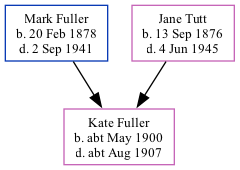

Kate Rosaline Fuller cMay 1900 - c1907
[ Home ] | [ Calendar ] | [ Surnames Index ] | [ Family History ]The child of Mark Fuller (a general laborer) and Jane Tutt (a general servant), Kate Fuller, the second cousin once-removed on the father's side of <a href="I1.html">Nigel Horne</a>, was born in Thanet, Kent, England <i>c.</i> May 1900<span class="citation">1,2</span>.<p>She died in Thanet <i>c.</i> Aug 1907<span class="citation">2</span>.
Parents
- Mark Anthony was born on Feb 20, 1878
- Jane Eliza Caroline was born on Sep 13, 1876
Citations
- England & Wales births 1837-2006 - Findmypast
- England & Wales deaths 1837-2007 - Findmypast
Media
England & Wales deaths 1837-2007 - BMD/D/1907/3/AZ/000104/142
England & Wales births 1837-2006 - BMD/B/1900/2/AZ/000215/306
Family Tree
Generated by Ged2Site. Last updated on Jul 20, 2025